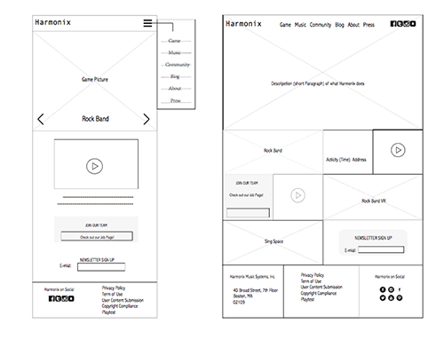

Process Overview
Harmonix Music Systems is a video game development company based in Cambridge, Massachusetts in the United States.
But their website interface leaves a lot to be desired. I improved style, sturcture and added some new features
The Problem
Harmonix Music Systems is a video game development company based in Cambridge, Massachusetts in the United States.
But their website interface leaves a lot to be desired.I improved the navigation and added some nifty new features along the way.
- more attractive--brand discovery--- the feature why people are addicted in their game--use in interface
- The structure of organization is confusing.---make sitemapping
- promoting its new products
- activities
SITEMAPPING and WIREFRAMES
- Defines the sitemap to help taking inventory of all content
- Categories the groups and navigation
After using the sitemapping model, i can clear determine number of templates that need to be prototype.
According to my understand about audiences'goals and motivation, i defined the content that needed in every page logically.

- Using wireframe to set the hierarchu
- Adding the content notes and functionality notes
- Designing the layout
I start broad on InDesign, put all content on with proper layout, and refine the interdace. In this process, i try to put all detail and leave enough space for real text.
COLOR ANALYSIS
Color
- Intial: At first, i assert the product of Harmonix is colorful, thus it will better to use simple color(white or black) as background.
I stacked product pictures to get a previous imaging. However,the effect is not unpleasant.
- According to brand discovery, Harmonix have ambitious plans in development of Rock Band 4 VR and PlayStation VR.
I found many of VR games are using the color as below. It will be more effecient to attract players with new VR product.
WEBSITE INTERFACE
I used many VR products interface as website interface, and add a title of game at the right bottom corner. If users attract by images, they might want to play the new game.
After all, loyal fans is the group who are willing to cost money on trying new products.
Using 12 Columns Grid
RESPONSIVE WENSITE INTERFACE
Reference/b>: HARMONIX MUSIC SYSTEMS, INC. (2017) Retrieved from http://www.harmonixmusic.com
Next Project
[UBook]